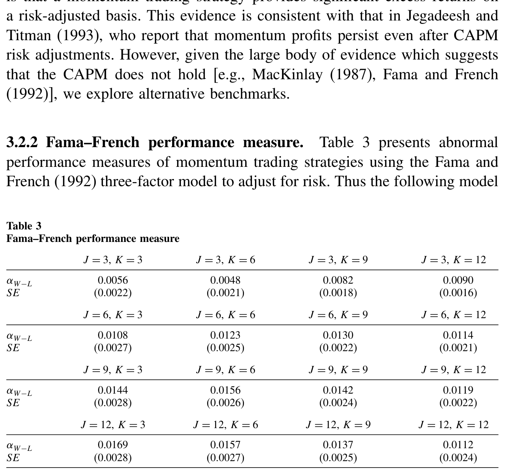
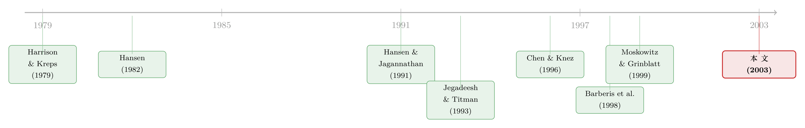

换一把尺子，一半的动量利润就消失了
本文读的是 Ahn, Conrad & Dittmar (2003, Review of Financial Studies)：他们不再用 CAPM 或 Fama–French 这类「需要先认定一个模型」的尺子去量动量利润，而是从一组行业组合里非参数地「捞」出一个随机折现因子（pricing kernel）来做基准。结果出人意料——大约 一半 的动量利润被这把尺子消化掉了（风险调整后的业绩约为原始利润的 51%）。更耐人寻味的是：动量组合相对市场组合的 beta 是 负的，可它相对这个非参数定价核的风险测度却乖乖地「该正就正」。换句话说，问题也许不在动量，而在我们一直用错了量风险的工具。
1 一个被「尺子」放大的异象
先把场景摆出来。
自从 Jegadeesh and Titman (1993) 那篇经典之作问世，金融学界就一直被一个简单到近乎挑衅的事实折磨着：买入过去 3 到 12 个月里涨得最好的「赢家」、卖空跌得最惨的「输家」，这个 动量 (momentum) 策略居然能稳定地赚到正的「异常收益」。它简单、它顽固、它在世界各地的市场里反复出现——它看上去就像是一张写在脸上的「市场无效」的判决书。
于是，理性派和行为派吵成一团。一边，Fama and French (1996) 试图用风险因子去解释它；另一边，Barberis, Shleifer, and Vishny (1998) 搬出「代表性偏差」和「保守主义」，Daniel, Hirshleifer, and Subrahmanyam (1998) 搬出「过度自信」与「自我归因」，要把动量利润钉死在投资者的心理偏差上。
但这场争吵里，藏着一个所有人都默认、却很少有人正面拷问的前提。
你说动量是「异常收益」——异常，是相对于「正常」而言的。可「正常」是谁定的？是 CAPM。是 Fama–French 三因子。是某一个被你事先选定的参数化定价模型。Jegadeesh and Titman (1993) 用的是 CAPM，Grundy and Martin (2001) 用的是市场加规模的双因子模型。问题是——如果这些模型本身就是错的呢？
这正是 Fama (1998) 那句著名的警告：长期收益的研究，统统逃不过一个 「坏模型」问题 (bad model problem)。你拿一把刻度本身就歪的尺子去量东西，量出来的「异常」，到底是东西真的异常，还是尺子在撒谎？
Ahn, Conrad, and Dittmar (2003) 这篇文章，做的就是这件事：把那把可能歪掉的参数化尺子先扔掉，换一把不依赖任何具体资产定价模型的、非参数的尺子，再来重新量一遍动量利润。
2 那把「无模型」的尺子：随机折现因子
要理解他们的做法，得先回到资产定价最朴素的那块基石。
在没有套利机会的市场里，Harrison and Kreps (1979) 证明，必然存在一个 随机折现因子 (stochastic discount factor, SDF)，也叫 定价核 (pricing kernel)。它满足这样一条定价关系：
$$E[m_{t+\tau}\, x_{i,t+\tau}\mid \mathcal{F}_t] = 1 \quad \forall\, i, t, \tau$$
这里 \(x_{i,t+\tau} = 1 + R_{i,t+\tau}\) 是资产 \(i\) 的总收益（gross return），\(\mathcal{F}_t\) 是 \(t\) 时刻公众可得的信息集，\(m_{t+\tau}\) 就是那个全市场共用的定价核。如果市场上还有一个无风险资产，那么对任意的超额收益（excess return）\(r_{i,t+\tau} = R_{i,t+\tau} - R_{f,t}\)，上式就化成更干净的一条：
$$E[m_{t+\tau}\, r_{i,t+\tau}\mid \mathcal{F}_t] = 0$$
别被符号吓到，这一行其实在说一件很直观的事。把它改写一下：
$$E[r_{i,t+\tau}] = -\frac{1}{E[m_{t+\tau}]}\,\mathrm{cov}(r_{i,t+\tau},\, m_{t+\tau})$$
一个资产的期望超额收益，完全由它和定价核的 协方差 决定。直觉是这样的：定价核 \(m\) 在「坏日子」里取值高（你在那时多拿一块钱格外宝贵），在「好日子」里取值低。如果某个资产偏偏在好日子（\(m\) 低）才给你高回报、坏日子里掉链子，那它就是「火上浇油」式的风险资产，市场会要求它给出更高的风险溢价作为补偿。风险，就藏在这个协方差里。
接着，一个自然的问题是：这个 \(m\) 到底长什么样？
参数化的做法，是直接给它一个函数形式。比如 CAPM 就等价于断言定价核是市场收益的线性函数：
$$m_{t+1} = \theta_0 + \theta_1 R_{M,t+1}$$
但这恰恰是「坏模型」风险的来源——你赌的是这个线性形式是对的。
Hansen and Jagannathan (1991) 给出了另一条路：不假设 \(m\) 的形式，而是从一组可交易的「基础资产 (basis assets)」里把满足定价关系、且范数最小的那个 \(m\) 直接「反解」出来。这就是本文方法的源头。他们给出两个解。第一个落在基础资产收益的线性张成空间里，Chen and Knez (1996) 称之为 一价定律折现因子 (law of one price, LOP)：
$$m^{LOP}_{t+\tau} = x'_{t+\tau}\lambda$$
它的存在只需要「一价定律」成立。第二个更严格，要求定价核非负，从而排除掉「正收益、非正价格」这种白捡钱的套利机会，称为 无套利折现因子 (no-arbitrage)：
$$m^{NA}_{t+\tau} = (x'_{t+\tau}\lambda)_+$$
其中 \((\cdot)_+ \equiv \max(\cdot,\,0)\)。
这两个 SDF 的区别，正是「一价定律」与「无套利」这两个条件的强弱之分。LOP 只要求「同样的现金流卖同样的价」；无套利则进一步要求定价核处处非负，是更苛刻、也更接近真实市场均衡的条件。本文两套条件都做了一遍。（关于定价核如何在「好日子/坏日子」里取不同的值、又如何被请进期权来检验，可参见《定价核的两副面孔：为什么同样跌 10%，在「平静市」里更让人心痛？》。）
3 把动量利润，按在这把尺子下审问
有了 \(m\)，检验就水到渠成了。
动量策略买赢家、卖输家，本身就是一个零成本的超额收益组合 \(r_{TS,t+\tau}\)。如果这个定价核 \(m^*\) 真能给基础资产和它们的所有线性组合定价，那它也必须能给动量组合定价。于是 Chen and Knez (1996) 指出，一个最自然的业绩测度就是：
这个 \(\delta_\tau\)，本质上就是一个不依赖任何均衡模型的「异常业绩」。它和 Jensen (1968) 的 alpha 是近亲——事实上 Jensen alpha 只是它在「定价核是市场收益线性函数」这个特例下的样子。区别在于，\(\delta_\tau\) 不需要你事先认定哪个模型是对的。如果 \(\delta_\tau\) 显著大于零，说明这把「最小限度」的尺子也量不平动量利润，那它更可能真的是错误定价；如果 \(\delta_\tau \approx 0\)，那动量的成功就可以被「理性的风险补偿」所容纳。
估计它，用的是 Hansen (1982) 的 广义矩估计 (generalized method of moments, GMM)。把 \(x'\lambda\)（或无套利情形下的 \((x'\lambda)_+\)）代入，收集误差向量，构造样本矩条件 \(g_T(\lambda)\)，再最小化二次型：
$$J_T = T\, g'_T(\lambda)\, W_T\, g_T(\lambda)$$
其中权重矩阵 \(W_T\) 取矩条件协方差的逆。Hansen (1982) 告诉我们，在「无异常业绩」的原假设下，\(J_T \sim \chi^2_{n-k}\)。每个基础资产贡献一个矩条件，动量组合再加一个，于是针对单个策略的检验就服从 \(\chi^2_1\)。
这套机器还能往前推一步。前面假设的是「买入持有」式的静态权重，等于在问：动量利润能不能被基础资产的固定权重线性组合复制出来？但 Chordia and Shivakumar (2000) 提出过一个尖锐的反驳：动量利润其实和商业周期挂钩，是时变的期望收益在作祟，而非什么定价错误。为了回应这一点，本文跟随 Hansen and Singleton (1982)，假设条件期望对一组公开的工具变量 \(Z_t\) 是线性的，把定价关系扩展成 \(x \otimes Z\) 的形式，做了条件检验。
这里有个关键的「公平性」设计：Chordia and Shivakumar (2000) 那套时变期望收益模型，没有施加任何横截面约束。而本文的框架可以一边允许期望收益时变、一边仍然要求这些收益满足「一价定律」这样的均衡约束。也就是说，它问的是一个更严格的问题：在均衡约束之下，时变的期望收益还能不能解释动量？（动量到底是不是商业周期在背后操盘，亦可参见《会「看天」的 beta：当风险收编了价值与规模，动量却躲进了商业周期》。）
4 数据：用 20 个行业组合，去丈量 16 个动量策略
故事的两端都需要数据。
动量这一端，作者严格照搬 Jegadeesh and Titman (1993)：取 CRSP 上 1962 年 12 月 31 日到 1997 年 12 月 31 日的全部纽交所（NYSE）与美交所（AMEX）公司，共 420 个月度观测。每个月按过去 \(J = \{3,6,9,12\}\) 个月的累计收益把股票分成 10 档，最高的是「赢家」，最低的是「输家」，再持有 \(K = \{3,6,9,12\}\) 个月。\(J \times K\) 一共 16 个策略。由于 \(J=12, K=12\) 的策略需要 24 个月才能落地，时间序列被压到 396 个月（1965 年 1 月到 1997 年 12 月）。
尺子这一端，也就是基础资产，作者选的是 行业组合 (industry portfolios)。这背后有讲究。理想中，基础资产应当张成投资者面对的整个机会集，否则就可能错误地拒绝原假设。但动量是从所有 NYSE/AMEX 股票里挑出来的，你没法把全市场都塞进基础资产。怎么办？King (1966) 的经典发现给了答案：在决定股票收益的诸多因子里，市场因子和行业因子几乎捕捉了全部的共同变动——大的正协方差强烈地聚集在行业内部，负协方差则只出现在行业之间。于是作者每年用两位数 SIC 码，构造 20 个等权的行业组合，作为反解定价核的原料。
值得一提的是，这和 Moskowitz and Grinblatt (1999) 的「行业动量」是两回事。后者用行业组合去构造一个买赢家行业、卖输家行业的策略，再用 Fama–French 因子去做参数化风险调整；而本文里行业组合的唯一作用，是反解出定价核 \(m^*\)，权重在无条件检验里是固定的（条件检验里只随三个公开信息变量变动）。
先看原始的动量利润有多大。如表 1 所示，赢家减输家的月均收益，随 \(J\)、\(K\) 不同从约 0.06% 一直到 1.16%（\(J=12, K=3\)）不等，全 16 个策略平均下来约 70 个基点/月——这是一个相当可观、足以让无数人前赴后继的数字。

Table 1: The “average” profit across all 16 strategies is 70 basis points per
5 反转：一半的利润消失了，而 CAPM 反而在「火上浇油」
现在，把这 16 个策略，分别按三把不同的尺子量一遍。请盯住三组数字的对比，反转就藏在这里。
第一把尺子，本文的非参数定价核（LOP 条件）。 风险调整之后，动量策略的平均业绩 \(\delta\) 只剩下原始利润的 51%——整整一半被消化掉了。在要求「一价定律」成立时，16 个策略里只有 8 个（10% 水平上是 9 个）的残余利润在 5% 水平上仍然显著。更关键的是，对全部 16 个策略做的联合检验，无法拒绝「无异常业绩」的原假设。如果换上更严格的无套利条件（要求定价核非负），平均异常利润进一步大幅下降，但仍有 8 个策略的利润在 5% 水平上没被解释掉。
第二把尺子，CAPM。 结果完全是另一幅光景：16 个策略里有 9 个的风险调整后业绩比原始利润还高，13 个在 5% 水平上依旧显著。也就是说，用市场 beta 去「调整」，非但没削掉动量利润，反而把它放大了。
第三把尺子，Fama–French 三因子。 更夸张——全部 16 个策略不仅都保留了显著的正利润，而且 所有 16 个风险调整后的利润都相对原始水平被放大了。
你看出这里的怪异了吗？同一批动量策略，换三把尺子，量出三种结论：非参数尺子说「一半是风险补偿」，CAPM 和 FF 却说「风险调整后利润更高了」。到底是动量本身有问题，还是尺子有问题？
本文最漂亮的一击，就落在这个问题上。
6 真正关键的一步：动量组合的风险，本该随风险溢价上升
作者做了一件大多数实证论文不会做的事——他们停下来，写了一个简单的理论，去推断极端赢家和输家组合的风险测度，相对「真实的」定价核，应该长什么样。
结论是：动量组合（赢家减输家）的风险测度，应当随真实的市场风险溢价递增。直觉并不难：当风险溢价升高时，高风险资产的预期收益被推得更高，更容易在近期跑成「赢家」；于是赢家组合天然地装载了更高的风险敞口。所以一个会「装风险」的动量组合，它的风险测度本就该是正的、且随风险溢价水涨船高的。
那么实证里看到了什么？
相对 市场组合 估计时，动量组合的 beta 是 负的——这和「风险测度应当随风险溢价递增」的预测完全相反。这正是为什么用 CAPM 量动量会「越量利润越大」：一个负 beta 的组合，CAPM 会认为它本该要求更低的收益，于是它实际赚到的钱全被记成了「异常」，甚至被放大。
但当作者改用自己反解出的那个非参数定价核去估计动量组合的 beta 时，这些风险测度 更接近理论预测的行为：该正的正了，该随风险溢价动的也动了。
于是反转完成了。问题从来不在动量利润「凭空冒出来」，而在于我们一直用的市场 beta 是被错误设定的。动量策略之所以在 CAPM/FF 这些基准下显得如此「超凡脱俗」，与其说是因为它从过去价格里榨取了什么信息，不如说是因为风险调整这件事本身被做歪了。CAPM 类的尺子刻度是反的；换上一把刻度正确的尺子，一半的「神话」当场蒸发。
必须老实交代一个前提：这把尺子的「正确」，建立在一个未经检验的假设上——那 20 个行业组合本身是被正确定价的。如果行业组合自己就不在均衡里，那本文充其量只是把定价之谜从「动量」搬到了「行业组合」头上。作者对此直言不讳。这也是为什么他们反复强调：非参数调整解释了大约一半，剩下的一半，无法排除是真正的错误定价。
7 文献脉络
把这条线索理一理，会看到一个很清晰的「方法论接力」。
最上游，是两块定价理论的基石：Harrison and Kreps (1979) 用无套利推出了随机折现因子的存在性，Hansen (1982) 给出了估计它所需的 GMM 工具。真正把「从一组基础资产反解出 SDF」变成可操作技术的，是 Hansen and Jagannathan (1991)——最小范数折现因子、非负性条件，都出自这里。

与此同时，动量这条实证线在另一头独立生长：Jegadeesh and Titman (1993) 确立了动量这一事实并用 CAPM 量它；Fama and French (1996) 试图用因子风险收编它；Barberis, Shleifer, and Vishny (1998) 等行为派则把它解读为心理偏差的产物。Moskowitz and Grinblatt (1999) 把动量延伸到行业层面，Grundy and Martin (2001) 用条件双因子模型，Chordia and Shivakumar (2000) 主张时变期望收益就能解释它。
Chen and Knez (1996) 是承上启下的关键一环——他们把 Hansen–Jagannathan 的非参数 SDF 改造成了业绩评价的工具，原本是用来评共同基金的。Ahn, Conrad, and Dittmar (2003) 的贡献，正是把这把「无模型业绩尺」第一次系统地对准了动量这个最顽固的异象，并由此指出：参数化基准之所以解释不了（甚至放大）动量，根子在风险调整的设定误差。
8 评论与延伸（Q&A + 研究方向）
(a) 几个可能的疑问
Q：「非参数」到底非参数在哪？它不还是要选基础资产、选工具变量吗？
准确地说，它非参数在不假定定价核的函数形式——不像 CAPM 断言 \(m\) 是市场收益的线性函数。但它确实有两处「人为选择」：基础资产（这里是 20 个行业组合）和条件检验里的工具变量。所以它不是「无假设」，而是把假设从「模型形式」转移到了「基础资产张成机会集」上。这也正是文章最大的软肋所在。
Q：解释掉一半，到底算成功还是失败？
取决于你站哪一队。对行为派，这是好消息——剩下的一半 5% 水平上仍显著，错误定价无法被排除。对理性派，这也是好消息——一把最小限度的均衡尺子，无需任何特定模型，就抹掉了一半利润，而且联合检验拒绝不了「无异常业绩」。文章的克制恰恰在于：它不替你站队，只把「尺子坏了」这件事钉死。
Q：为什么 Fama–French 反而把利润放大了？这不是更好的模型吗？
「更好」是相对于解释规模和价值而言的。对动量，FF 三因子里的 HML 恰恰站错了边——动量赢家往往是「成长」而非「价值」，于是 FF 模型预测它们该有更低收益，结果实际收益全被记成 alpha 并被放大。这正是「坏模型问题」的鲜活样本：一个在别处很好用的模型，换个对象就把信号读反了。
Q：动量组合的市场 beta 为负，这本身可信吗？
这是个被反复记录的稳健事实，不是本文的统计噪声。赢家和输家在不同的市场状态下被选出来，使得多空组合的市场暴露天然偏负。本文的贡献不是发现这个负 beta，而是论证了它与理论预测相悖，从而把矛头指向 CAPM 的设定误差，而非动量本身。
Q：条件检验为什么只「略微」降低利润，这是否打了 Chordia–Shivakumar 的脸？
不能这么说。本文的条件检验只用了一组有限的公开信息变量，且额外施加了均衡约束，与 Chordia and Shivakumar (2000) 无横截面约束的设定不可直接比较。结果是：在均衡约束下，时变期望收益对动量的「补充解释力」相当有限，尤其对短持有期。这是对那条解释的一个边界性约束，而非彻底否定。
Q：把谜题从动量搬到行业组合，是不是一种「循环论证」？
这是最致命的质疑，作者也承认。整个推断的有效性，押在「20 个行业组合被正确定价」这一未经检验的前提上。如果行业组合本身有定价误差，那「一半利润是风险」的结论就站不住。所以严格地说，本文证明的是一个相对命题：相对于被正确定价的行业组合，动量利润有一半是风险补偿。
(b) 几个可能的研究问题与提案
1. 把这把「无模型尺子」搬到公司债动量上
【经济故事】公司债同样有动量，但信用市场的风险结构（违约、流动性、利率）远比股票复杂，参数化模型更不可信，「坏模型问题」更严重。用非参数 SDF——基础资产换成评级×久期分组的债券组合——重新量公司债动量，能直接检验「债券动量是风险还是错误定价」。 【可行性】中。数据上 TRACE + 评级/久期分组组合可得；难点在债券收益的非同步成交与流动性噪声会污染 GMM 矩条件，需要先做干净的收益度量。识别依赖「基础组合被正确定价」这一老问题，在信用市场尤其脆弱。
2. 外资持有人会改变定价核吗？
【经济故事】当一个市场的边际投资者从本地人变成外资时，「真实的」定价核可能随之改变。可以用同一套非参数框架，在外资持股比例不同的市场（或同一市场不同时期）分别反解 SDF，看动量/价值利润被解释的比例是否随外资进入而系统性变化。 【可行性】中偏低。需要跨国或可投资度（investability）变动的自然实验来制造外资比例的外生变化；SDF 的跨市场可比性是技术难点。但这是把「定价核」与「投资者结构」直接挂钩的少见角度。
3. 流动性中性化之后，动量的风险测度还成立吗？
【经济故事】动量利润已被指出与「最难交易的股票」高度重叠（参见《动量利润的「纸面富贵」》）。若在基础资产里加入流动性分组组合，反解出的 SDF 是否会进一步吃掉动量利润？这能区分「动量是风险」与「动量是流动性补偿」。 【可行性】高。Amihud 非流动性分组 + 行业组合作为联合基础资产，GMM 框架几乎可以直接复用，数据全部公开可得。是本文一个低成本、高价值的直接延伸。
4. 用现代机器学习的 SDF 替换 Hansen–Jagannathan 的线性张成
【经济故事】本文的 LOP 折现因子落在基础资产的线性张成空间里。如果真实定价核是非线性的，线性 SDF 会系统性低估其解释力。用神经网络/核方法估计一个非线性的非负 SDF，再量动量，被解释的比例可能远超 51%。 【可行性】高。近年条件 SDF 的机器学习估计已相当成熟，本文的检验统计量（\(\delta\)、\(J_T\)）可平移使用，唯一要小心的是过拟合与样本外验证。
9 我的判断
这是一篇方法论价值远大于结论价值的论文，而它最聪明的地方，恰恰在于它清楚这一点。
它的真正贡献不是「动量利润少了一半」这个数字——这个数字依赖于行业组合被正确定价的强假设，换组基础资产很可能就变。它的贡献，是把整个关于动量的争论，从「它是不是异象」拽回到一个更前置、也更被忽视的问题上：你凭什么相信你量风险的那把尺子？ 当 CAPM 把动量的 beta 量成负、FF 把利润越调越大，而一把不依赖任何模型的尺子却让动量组合的风险测度「乖了」时，最朴素的奥卡姆剃刀指向的，是参数化基准的设定误差，而非投资者的集体非理性。这是对 Fama (1998)「坏模型问题」最具操作性的一次回应。
对识别的担忧，我最在意两点。其一，是那个反复出现的「行业组合被正确定价」前提——它把谜题搬了家，却没消灭它，文章对此足够诚实，但读者不该忘记。其二，是基础资产「张成机会集」的程度无法验证：若 20 个行业组合张成不足，就会错误地拒绝原假设，从而高估残余的异常利润；反过来，若过度拟合，又会人为消化掉真实的错误定价。这两个方向的偏差，作者用 Monte Carlo 做了部分缓解，但终究无法根除。
后续我最想看到的，是把这套「无模型业绩尺」配上更灵活的非线性、非负 SDF（机器学习是天然的工具），并系统地检验「基础资产选择」对结论的敏感性——到底是行业组合这把尺子的功劳，还是任何一组合理的基础资产都能消化掉一半动量？回答了这个问题，我们才能知道：被解释掉的那一半，究竟是风险，还是又一次「换错了尺子」。
参考文献
- Barberis, N., A. Shleifer, and R. Vishny (1998). A Model of Investor Sentiment. Journal of Financial Economics 49, 307–343.
- Chen, Z., and P. Knez (1996). Portfolio Performance Measurement: Theory and Applications. Review of Financial Studies 9, 511–555.
- Chordia, T., and L. Shivakumar (2000). Momentum, Business Cycle and Time-Varying Expected Returns. Journal of Finance (forthcoming).
- Daniel, K., D. Hirshleifer, and A. Subrahmanyam (1998). Investor Overconfidence, Covariance Risk, and Predictors of Securities Returns. Journal of Finance 53, 1839–1886.
- Fama, E. (1998). Market Efficiency, Long-Term Returns, and Behavioral Finance. Journal of Financial Economics 33, 283–306.
- Fama, E., and K. French (1996). Multifactor Explanations of Asset Pricing Anomalies. Journal of Finance 51, 55–84.
- Grundy, B. D., and J. S. Martin (2001). Understanding the Nature of the Risks and the Source of the Rewards to Momentum Investing. Review of Financial Studies 14, 29–78.
- Hansen, L. P. (1982). Large Sample Properties of Generalized Method of Moments Estimators. Econometrica 50, 1029–1079.
- Hansen, L. P., and R. Jagannathan (1991). Implications of Security Market Data for Models of Dynamic Economies. Journal of Political Economy 99, 225–262.
- Hansen, L. P., and K. Singleton (1982). Generalized Instrumental Variables Estimation of Nonlinear Rational Expectations. Econometrica 50, 1269–1286.
- Harrison, J., and D. Kreps (1979). Martingales and Arbitrage in Multiperiod Securities Markets. Journal of Economic Theory 20, 381–408.
- Jegadeesh, N., and S. Titman (1993). Returns to Buying Winners and Selling Losers: Implications for Stock Market Efficiency. Journal of Finance 48, 65–91.
- Jensen, M. (1968). The Performance of Mutual Funds in the Period 1945–1964. Journal of Finance 23, 389–416.
- King, B. F. (1966). Market and Industry Factors in Stock Price Behavior. Journal of Business 39, 139–190.
- Moskowitz, T. J., and M. Grinblatt (1999). Do Industries Explain Momentum? Journal of Finance 54, 1249–1290.